Every settlement under the glass is built from one repeating idea: a greenhouse on top, a home underneath, and between them a metre and more of living soil that feeds the people above and shields the people below. The colonists call this unit a block. A block is roughly thirty-two metres across; eight glass barrel vaults ride its roof, and beneath the soil eight masonry vaults answer them, bay for bay. About a hundred people live in a block. The crops above their heads feed perhaps a dozen — the settlement farms far more widely than it sleeps, and a block is a bedroom in a much larger farm.
The masonry is the colony’s pride and its economy in one material. There is no structural steel to spare for houses and no aluminium at all — the smelters that could make it died with the Incident. What the colony has is brick, fired from Martian clay, and the old arts of the arch. Every doorway is a little bridge. The dressed stones around each opening — the voussoirs, though nobody under the glass uses the word — are cut by masons whose line has done nothing else for four generations.
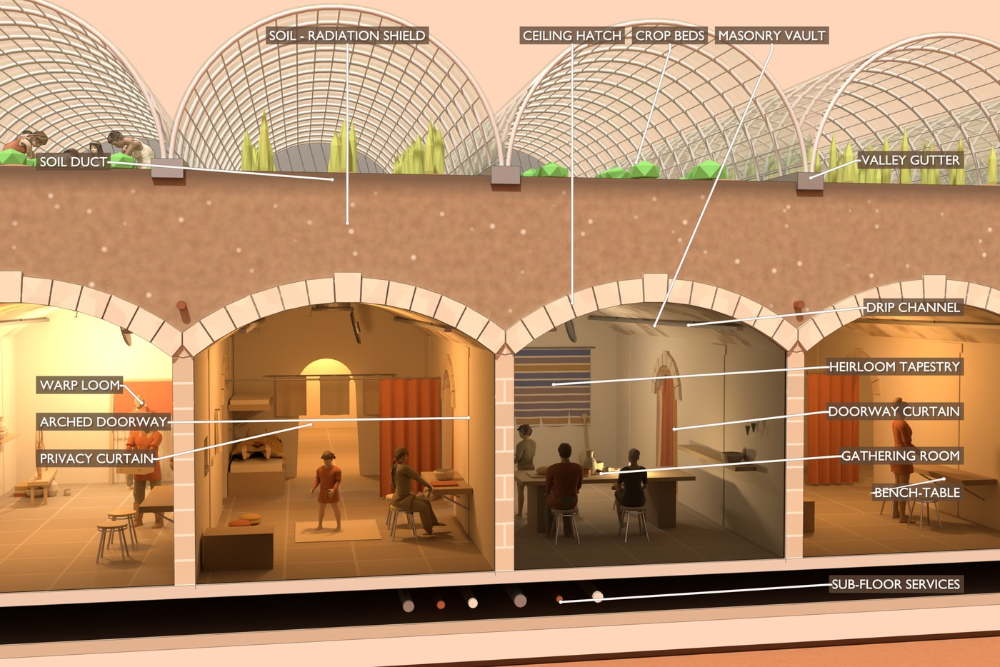
Inside, a family’s space is a bay — one vaulted chamber, perhaps two or three for a grown household — and its door is a curtain. A red curtain, usually; iron-oxide red is the cheapest dye the colony makes, and so it is the colour of everything ordinary. The curtain cannot be locked. It does not need to be. The curtain is the lock, the saying goes, and it means: privacy here is a thing people give each other, not a thing they take.
Climb the soil duct from any habitat bay — there is a ladder bolted inside the standpipe — and you come up among the crops, under the long glass. The greenhouse level is warmer than the home below, more humid, brighter than any room in the colony. The light is Mars’s own, filtered through panes whose faint green tint is the iron the glassmakers could not remove and stopped apologising for.
The beds follow a settlement-wide plan — potatoes and sweet potato for a third of every plate, legumes for a quarter, grain, greens, oil crops in their shares. Hands kneel to the work; there are no machines to ride here, and the tools come to the field in a stalk-board tote. The soil itself is the colony’s slowest, most precious manufacture: three centuries of composted residue, night soil, and ground rock, alive the whole depth of the bed. It shields the sleepers below from the sky’s radiation while it feeds the eaters above. No other single thing in the settlement works this hard.
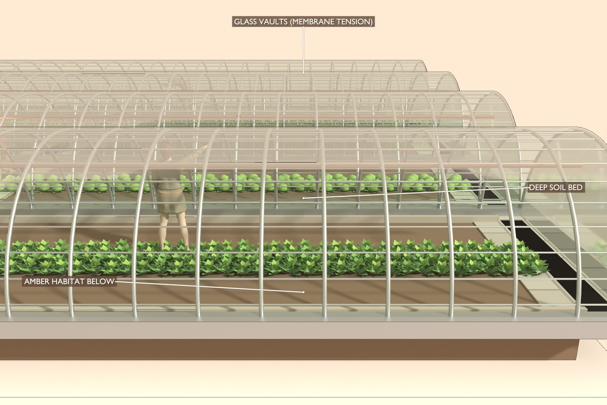
Every habitat ceiling is the underside of a watered field, and so every ceiling, sooner or later, drips. The colony does not fight this; it manages it, the way coastal towns once managed tide. Drip channels run the vault lines to carry the seep away; condensation traps collect what the channels miss; and the stains that bloom across the masonry are read like a logbook — every patch is a repair that worked or one that is still owed.
The hatch in the plate is a soil duct’s lower mouth — submarine work, with its rubber gasket and dogging clamp, because every duct is also a hole in the roof of a pressure vessel. Air moves through these shafts in a slow, designed breath: warm and oxygen-rich down from the crops by day, cool and carbon-heavy up from the sleepers, no fans required. The building breathes through the same throat the farmers climb.
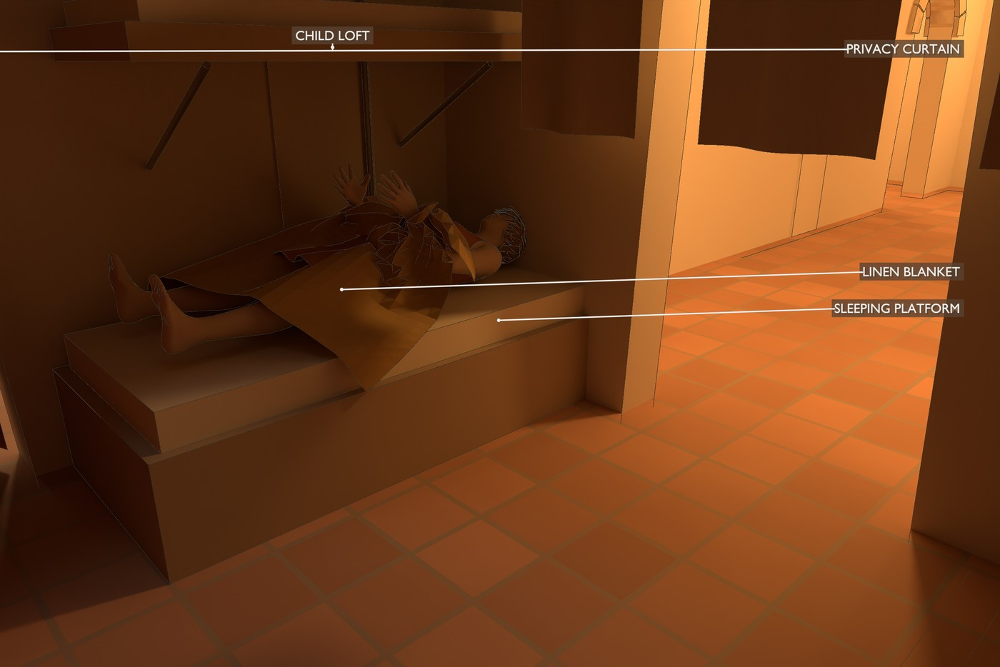
A block has one door that matters, and it opens not onto another room but onto the public world. Step through the pressure door at the end wall and you are in the tunnel — a buried concrete bore nine metres across, wide enough that a grown person beside a moving rail-cart never has to press to the wall. The whole settlement is strung on these: a great trunk line with its branches, the way a leaf is strung on its veins.
The bore is not steel — steel is too precious to spend on walls, and a buried tube under pressure wants the curve of a ring in any case. It is cast regolith concrete, pre-stressed, banded at its joints with rings of dressed voussoir stone: the same masons’ art as every doorway in the colony, only turned on its side and run for kilometres. A flat floor is laid in the round bottom; a light rail runs down one side and a walkway down the other; and the pipes of a whole district — water out, waste back, the speaking-tube — ride the upper haunches just below the cut.
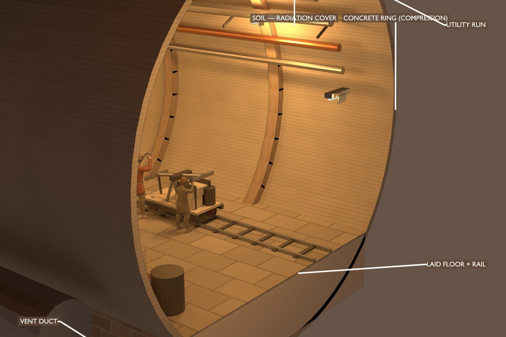
And because the tunnel is the only space the colony has to spare, it is not only a road. In a cleared stretch by a greenhouse mouth, where the bore runs wide and the rail is quiet, the children play — a low, bounding football in the third of Earth’s gravity, the ball hanging at the top of its arc long enough to be a held breath.
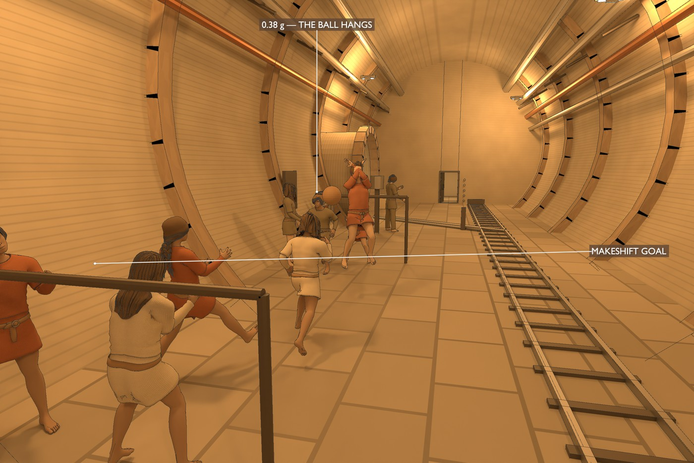
Where the tunnels of a whole district come together, the colony does the single extravagant thing it permits itself. It builds a dome. The junction the people call the Cross is the largest enclosed volume most colonists will ever stand beneath after the greenhouses — a ring of great piers carrying a brick-and-stone dome, with half-domed bays opening between them like the petals of a flower turned to stone.
It is the same arch the masons cut for every curtain-doorway, only compounded past counting until repetition itself becomes magnificence — for the colony cannot build tall (it has no steel to spare, and no wish to thin its roof of radiation soil), so when it wants a room to feel like an occasion, it builds wide, and carries the width on stone. The arches land on broad flat imposts that take the whole thrust of the vault; nothing comes to a precarious point. The floor beneath is the grandest in the settlement: cut polychrome stone, worn smooth at the crossing where three centuries of feet have met.
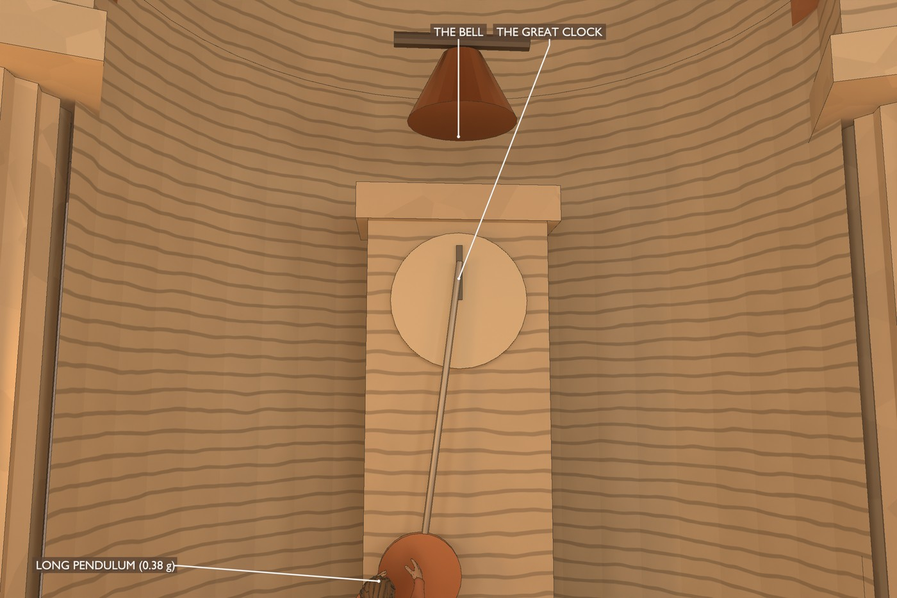
The Cross is market and forum and parish-pump at once. Stalls trade cloth and grain and fired clay along its radial halls; the atmosphere-monitor keeps her station at the Watch bay with her lamp and her detector bird; notices are posted, disputes aired, names called. A bell hung at the crossing marks the hours and, when it must, the alarms.
Nobody cooks at home. There is no flame in the residential tunnels — fire is the one catastrophe the atmosphere cannot forgive — and electric heat at scale wants its own ventilation, its own grease-stained vault, its own craft. So the colony eats from kitchen nodes: cookshops at the junction chambers, each feeding five hundred to a thousand people from the blocks around it. You carry your portions home, or you stay, and staying is the point.
A node at a branch tip may be little more than a widened corridor with benches. But a node at a core junction — where the tunnels of a whole district meet — is a hall of columns, hundreds of them, carrying two tiers of arches striped red and pale in fired brick and dressed stone. It is the same arch the masons cut for every doorway, only repeated past counting until repetition itself becomes grandeur.
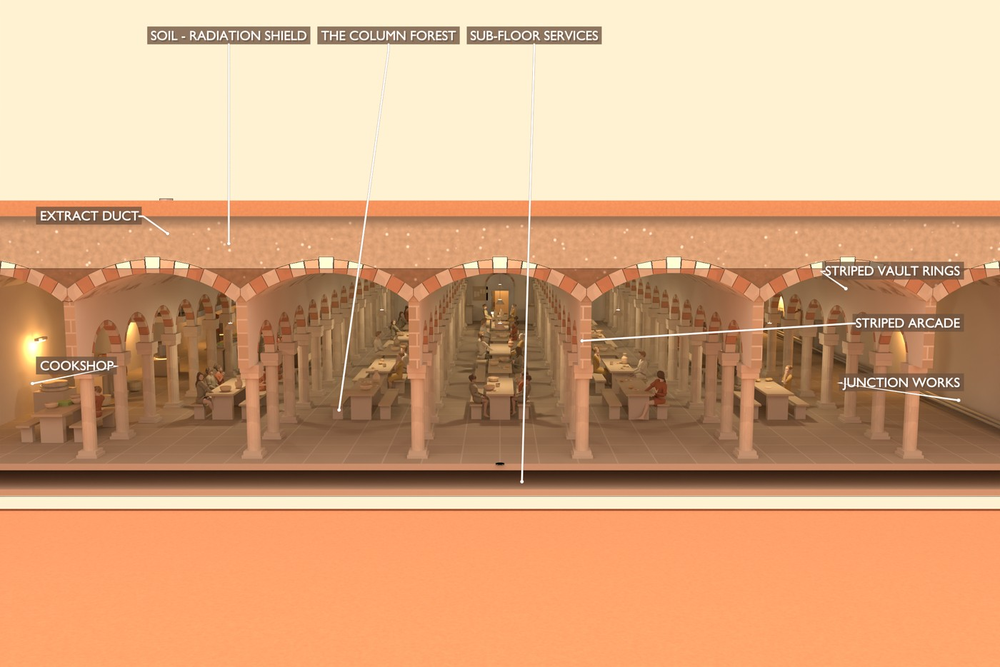
The node is the settlement’s news service, court of first instance, and marriage market, all of it conducted over porridge. A rumour started at a core junction reaches the branch tips in a sol, carried by people who eat at one node and work near another. Minor disputes are settled at the most public table on purpose — anything said there is witnessed. And the head cook, who feeds a thousand people and watches them all eat, knows who is sick, who is feuding, and who has started sharing a bench. The cook knows, people say, and stop explaining.
At the back of the works bay, behind the eaters, the junction earns its other name. A steel panel of hand-wheels can shut any service to any branch; the slurry pump — the most failure-critical machine in colonial life, and the least thanked — thumps in its corner; a copper speaking tube carries a voice to the next junction, because since the Incident there is no other wire that talks.
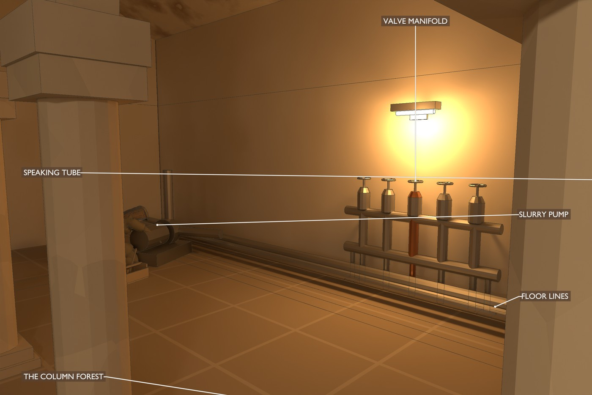
If the kitchen node is where the settlement performs itself, the bathhouse is where it stops. Full bathing needs heated water, drainage, and a connection to the greywater cycle — too expensive to plumb into every block — so it is communal, a vaulted hall serving five hundred to two thousand people from the blocks around it. You go perhaps once or twice a week; the water budget allows no more. It is not a quick wash but an hour’s event, and it is the one room where the whole material language of the colony — the dye-rank, the copper pins, the weave you can read at a glance — is left folded in a niche by the door.
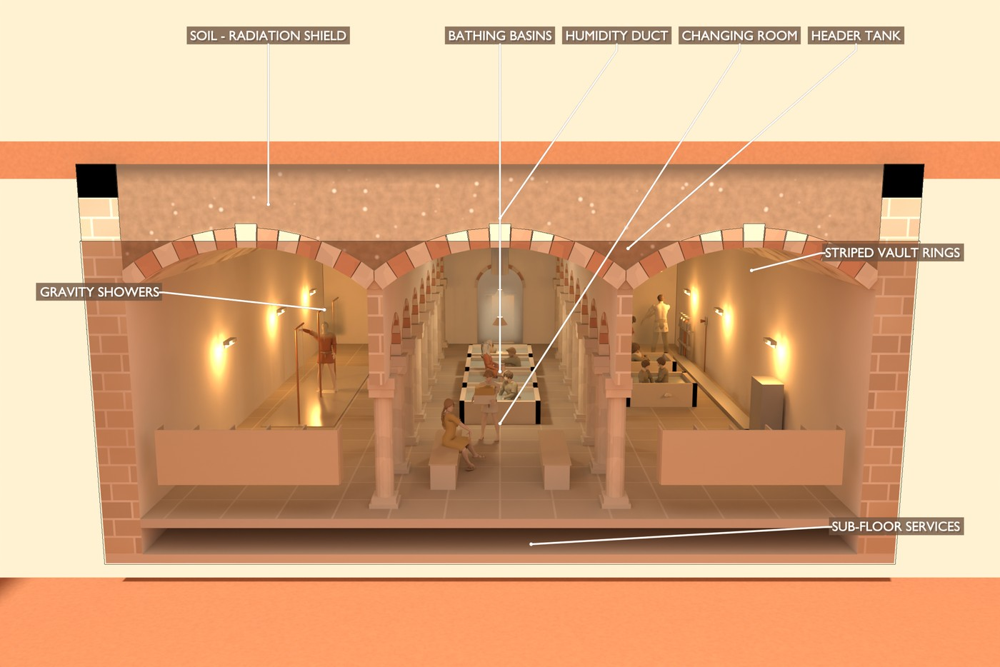
The water comes warm from a header tank near the vault crown, runs down a cascade of masonry basins — wash before you enter, as the custom goes — and leaves through a greywater drain to be recovered. Bathers sit in the basins to the waist; others stand under the gravity showers, perforated pipes that rain warm water from the header. The steam rises through a duct to the greenhouse above, where the humidity is welcome. The ceiling, of course, drips: a bathhouse ceiling is always wet.
The social fact of the bathhouse is its nakedness — not titillating but levelling. Without the craft costume there is no telling a bureau-holder’s child from a waste-worker’s; they share the same basin and the same warm water. The talk is slower here, carried by the echo of water on masonry, and a particular discretion governs it. The bathhouse is kept by the Haddad line — water-keepers who tend the heat and the basins and the linen, and who, like the cook, hear everything and repeat none of it. An indiscreet bath-keeper does not keep the baths long.
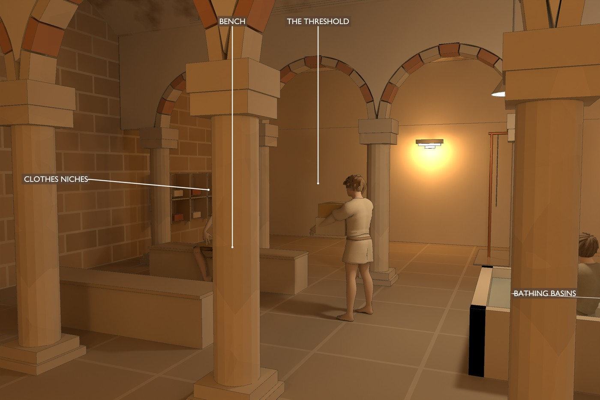
In a sealed world there is no away. Every atom that enters a person at the table must come back to the soil, or the soil dies and the people with it; and every tool, pipe, and rail must be made from what the colony can dig and smelt itself. Two industrial hearts keep the loops closed, and they sit at opposite ends of the colony’s temperature.
The first is cold, sealed, and watched. At an air-gapped node off a branch root, the settlement’s waste is turned back into its soil — digested in sealed tanks under floating gas-domes that ride up as the biogas gathers, then composted hot enough to kill what digestion leaves, a fraction of the recovered gas burned to keep the digesters warm. The air in here is methane and worse, so no machine reads it: a person keeps the gas-watch, by lamp and by the silence of a caged bird.
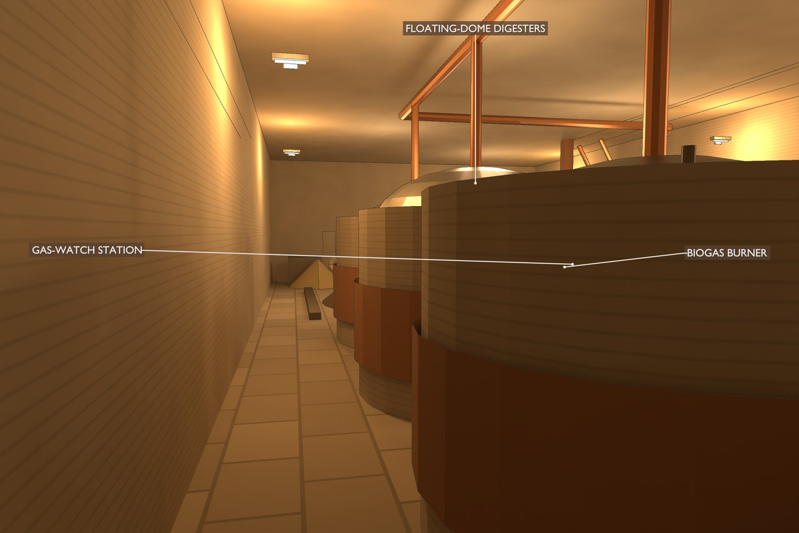
The second heart is molten and loud. The colony’s iron is smelted at one central ironworks — not a single furnace but a shared cluster of them — the regolith ore (Mars is iron-rich, near a fifth iron oxide) reduced not with coal, which the planet has none of, but with carbon from Sabatier-synthesised methane and charcoal burned from crop residue. The white-hot metal runs in sand channels to the pig-beds and is rolled out to bar. Around it cluster the forge-shops, where the Faber smiths beat out the door-fittings, the rail, and the buckles that become a grandparent’s heirloom. Steel is precious here at its source: in the cool gallery above the heat, a clerk counts every ingot into the Book.
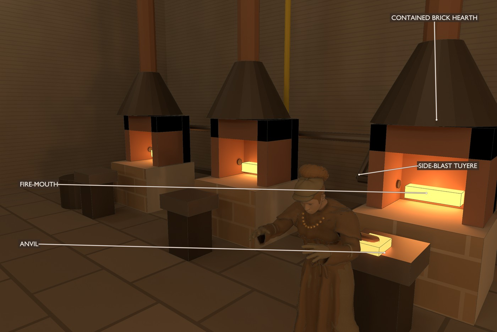
Of all the records the colony carried down from the ships, one has survived whole — because people keep it whole: the Register, the Book, in which three hundred years of births, deaths, pairings, and craft-adoptions are written by hand. The technical manuals rotted; the science was lost with the software that held it; but the Book endures, copied and checked and corrected, because without it the rules that say which lines may pair have no foundation at all.
It is kept in a quiet vaulted hall that is the opposite of the works in every way — dim, ordered, hushed, cool. The colony lives by cheap amber light, but here, over the writing desks, it spends the dear full-spectrum lamps without stinting, for the letters must be exact. The Register is no printed thing; the press is for books that will not change, and the Book changes weekly. It is manuscript — copied stroke by stroke by the scribes of the Clarke line, in prescribed letter-forms, the cleanest and most literate hands in the settlement.
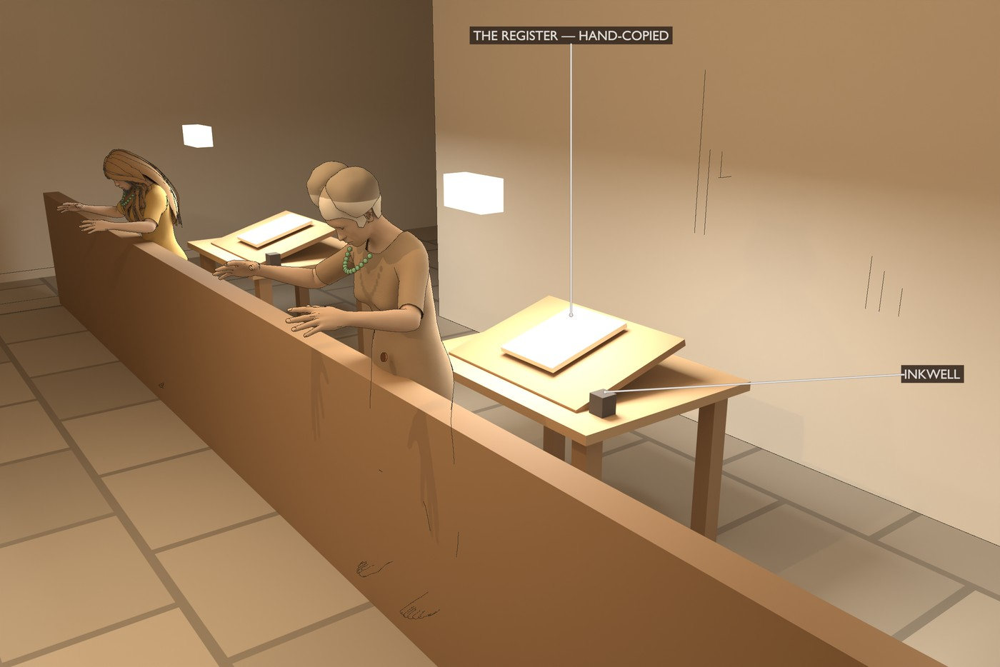
The master copies are sealed in an inner vault behind a heavy door — the one document the colony cannot afford to lose to fire or breach. People come to the rail to have a name found, a descent confirmed, a pairing checked before any feast is cooked. But the Book, as the cooks and the bath-keepers know, mostly confirms what the settlement has already seen.
The colony cannot make a hospital the way the ships had one — there is no synthesising bench, no imaging beyond a vacuum tube, no pharmacology past what can be grown or cultured by hand. What it keeps instead is a competent early-twentieth-century medicine, held at a steady state by the Ferreira line: surgery under ether with maintainable steel instruments, antisepsis by the steam sterilizer, penicillin cultured in the back room, and a plant pharmacy on the drying rack. It is enough to set a surface-worker’s broken leg, to carry a fever, to bring a child — and honest enough to know its own edges.
The operating theatre is the one place the building spends without counting. The hall is roofed in the Mason line’s barrel vault and lit, like everywhere, by cheap amber sodium; but over the table burns the dear full-spectrum good-light, the same deliberate spend the Register makes over its scribes. Beneath it the patient lies draped and under ether — drawn from a stoppered jar of soaked sponges through a limp rubber hose to a mask cupped over the face, the anaesthetist at the jar’s side, one hand always on the mask — while the surgeon works to the steel tray at the field. Against the east wall, behind a thickness of masonry, stands the vacuum-tube X-ray: within sustained capability, and shielded, because its beam scatters and the beds are close.
Recovery is the counterpoint. Where the works are loud and bright with their own fire, the ward is hushed and kept deliberately dim — steel cots along the side walls, heads to the masonry, an attendant moving between them with the water jug and the medicine trolley. Care, here, is the absence of the good-light as much as its presence: the dear lamp is spent on the work of mending, and the resting are left in the restful amber.
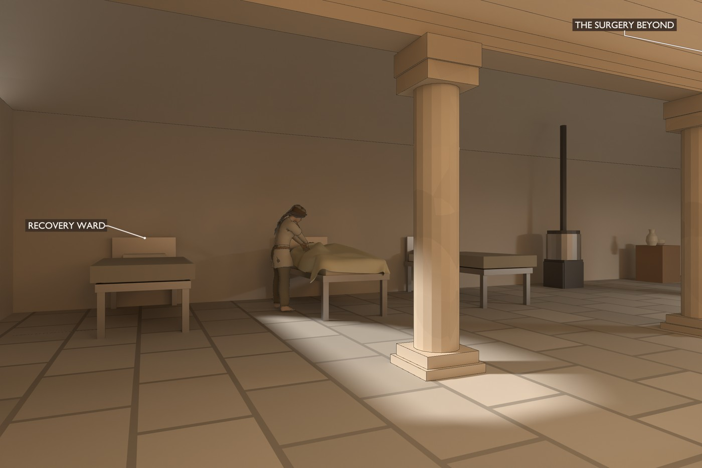
In a curtained room off the hall is the lying-in bed, and it is the social hinge of the whole settlement. The midwife is a Ferreira, but she is also the one figure who stands at both the bed and the Register’s edge: by custom she attends every birth before the Registrar’s pen, so that the line a child is entered into is witnessed at the moment it begins. The woven cradle waits on its rockers; the birth-record lectern stands by the door with its ledger open. Nothing in the colony is more carefully kept than who is born to whom — and it is kept, first, here.
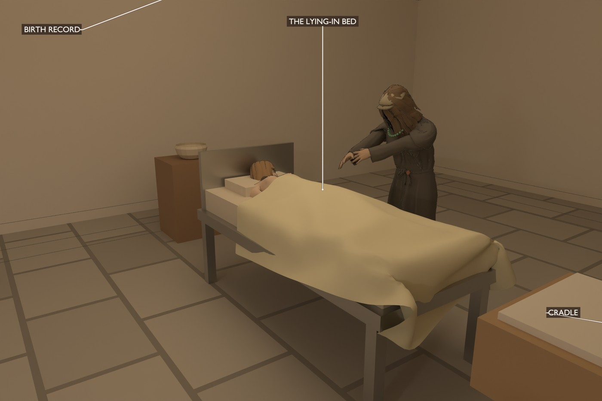
The apothecary is the room that makes the medicine the surgery spends. Shallow trays of pale mould culture the colony’s penicillin; a rack of fermentation flasks keeps the line going; bunches of dried herbs hang from the rail, the plant pharmacy that fills the gaps no culture can. Behind glass in the drug cabinet sits the scarcest thing in the building — insulin rendered from pig pancreas, the Ferreira–Schäfer line made flesh, doled out by careful allocation because there is never enough. And on the high shelf, among the most valuable printed books the settlement owns, the anatomical canon: the knowledge that cannot be allowed to rot with the manuals, copied and guarded like the Book itself.
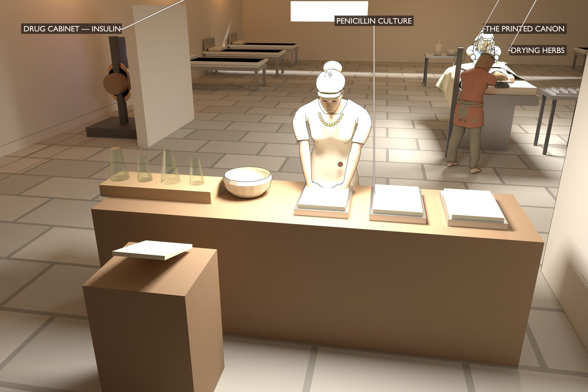
Ask anyone in the settlement who they are and you will get a line before you get a person: Whitfield Sara. Faber Orin. Clarke Ren. The surname is not a label but an address in the colony’s one sacred document — the Register, the Book — where three hundred years of births, pairings, and craft-adoptions are written down. A line is a craft as much as a family. The Whitfields weave; the Fabers smith; the Boulangers cook; the Okafors keep the pumps running, which is why everyone is polite to the Okafors.
The lines you meet in these pages run from the bureau-holders and the keepers of the Book, through the high crafts whose hands the copper, the glass, the machines, and the body pass through, to the broad craft middle that cooks and weaves and grows, and the lines that haul, mine, and keep the wet ceiling from coming down. Each is a craft before it is a family.
Meet the lineages → — the lines, and a few of the faces from these plates.
Three hundred years of sealed doors have done to English what they do to air: nothing is lost, but everything is recirculated. The colony still speaks English — a technician’s English, salted with checklist and procedure, worn smooth by mouths that never once needed the word for weather.
The full collections grow nightly: the sayings in the idiomatics files, the coined vocabulary in the lexicon’s neologism register, and the word-by-word triage of everything English brought on the ships. The language, like the soil, is a closed system that wastes nothing — it composts.